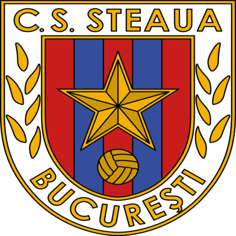
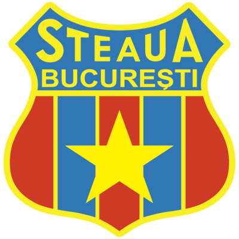
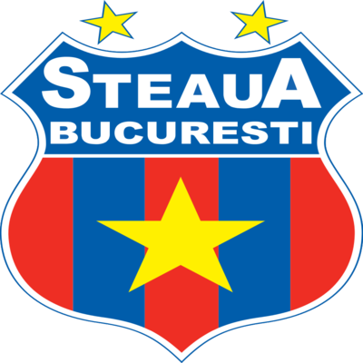
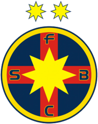

INTRODUCERE
Aventura roș-albaștrilor în fotbalul românesc începe, în negura timpului, la 7 iunie 1947, imediat după ce Generalul Mihai Lascăr și-a pus semnătura pe Ordinul de înființare a Asociației Sportive Centrale a Armatei (ASCA).Chiar dacă unii prezintă tedențios începuturile echipei, prin performanțele care au urmat, s-a demonstrat că cei care au pus umărul la crearea acestei entități nu s-au înșelat.
1947 - 1959
Toată lumea știe că orice început este greu. Ca atare, nici al echipei noastre nu putea fi altfel. Primul meci în Divizia A al ASA-ului s-a disputat, “pe teren propriu”, contra celor de la Dermata Cluj, în care antrenorul Coloman Braun-Bogdan a aliniat următoarea formulă: Lăzăreanu – Cernea, Jivan, Taborsky – Mark, Nanciu – Tălmaciu, Bernhardt, Marinescu, Popescu. Disputată pe stadionul Venus, partida s-a încheiat la egalitate, 0-0, la fel cum s-a încheiat şi următorul “match”, cu Ciocanul Bucureşti.
1960 - 1969
Anii ’60 debutează cu un un amical de lux, împotriva celor de la Inter Milano. CCA-ul lui Gheorghe Popescu s-a impus cu 2-0, grație golurilor lui Alecsandrescu si Crișan. Un nou titlu de campioană. Față de precedentele ediții, cea din 1959-60 a fost câștigată într-o manieră categorică, cu șapte puncte avans față de ocupanta locului doi, Steagul Roșu Brașov, și la 13 față de Dinamo. În acel an, campioana României a dat și golgeterul: Gheorghe Constantin, cu 20 de goluri.
1970 - 1979
Deceniul a început promițător, cu două Cupe ale României consecutive, în fața rivalilor de la Dinamo. În finala din ‘70, în fața a 30.000 de spectatori, Voinea și-a răpus rivala printr-o dublă, în minutele 7 și 56, iar în cea din ’71, călăul lui Dinamo s-a numit Tătaru, care a marcat cele trei goluri ale Stelei. Anul 1971 s-a încheiat cu eliminarea Barcelonei în turul al doilea al Cupei Cupelor, după două victorii (1-0 pe Nou Camp și 2-1 pe 23 August), toate golurile militarilor fiind semnate de Viorel Năstase. În turul următor, Steaua era eliminată, fără înfrângere (1-1 şi 0-0), de un alt nume mare: Bayernul lui Franz Beckenbauer.1980 - 1989
După două decenii în care nu a rupt gura târgului, apar semnele că avea să se nască o echipă de aur. Sătul de succese sporadice, comandantul clubului Ion Aurel decide să-l aducă în club pe fostul golgeter din perioada de glorie a CCA-ului, Ion Alecsandrescu. Din 1962, după retragere, Alecsandrescu a ocupat funcţia de secretar general al Federaţiei Române de Fotbal şi a acceptat să devină vicepreşedintele secţiei de fotbal, în 1981.1990 - 1999
Pe 9 septembrie 1989, Dinamo a învins Steaua, chiar în Ghencea, cu un necruțător 3-0 și a pus capăt seriei de invincibilitate de 104 în campionat, ceea ce reprezintă și astăzi un record la nivelul fotbalului european. Avea să fie înfrângerea care aducea cu sine și pierderea campionatului în favoarea rivalilor. Schimbările din viața politică au făcut ca șirul succeselor în campionat să fie întrerupt, însă fără vreo legătură.
2000 - 2009
Performanțele obținute în deceniul precedent au apăsat greu pe umerii următorilor antrenori. Era greu să ajungi la asemenea cifre. Structura campionatului avea să cunoască modificări: numărul echipelor din prima divizie s-a modificat pentru prima oară după 27 ani și a ajuns la 16. Cu Victor Pițurcă pe bancă, Steaua s-a impus în campionat, cu un cuplu de atac letal: Vlădoiu-Dănciulescu.